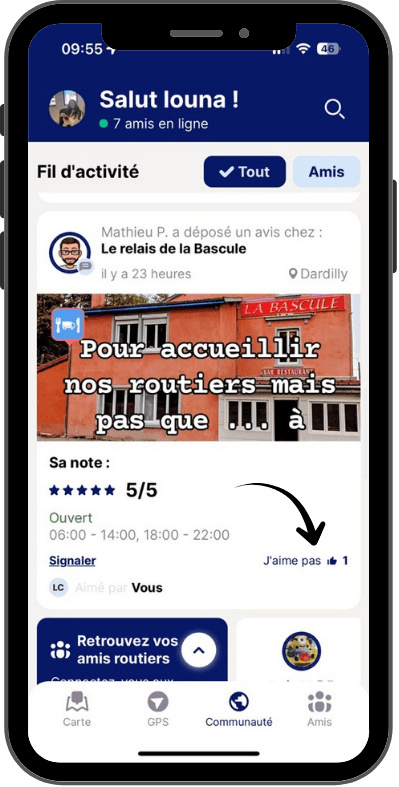

Les nouveautés de l’app

Like les contributions des autres conducteurs !
- Tu peux maintenant liker les photos et les commentaires des autres conducteurs.
- Un simple geste pour encourager ceux qui font vivre la communauté, et montrer quelles infos sont vraiment utiles sur la route.